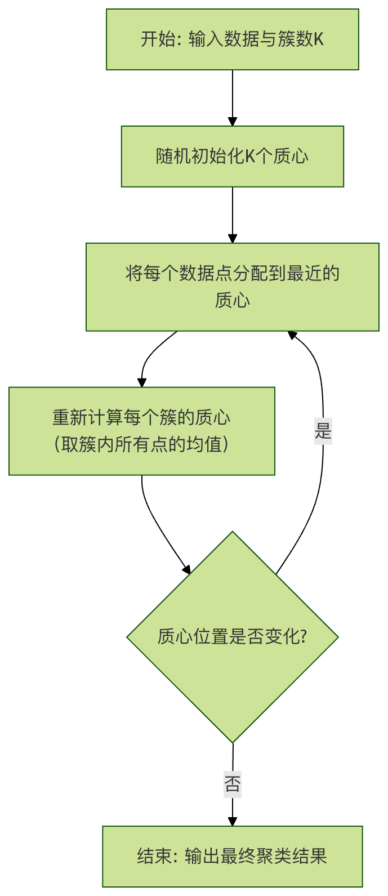
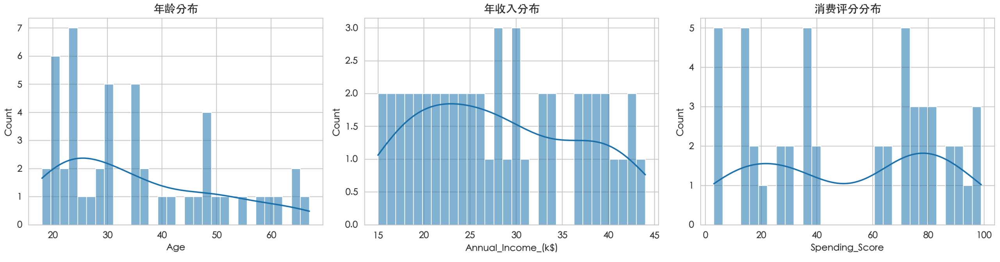

機械学習 - 顧客セグメンテーション
今日のデータ駆動型ビジネス世界において、顧客を理解することが成功の鍵です。
しかし、顧客数が数千、数万、さらには数百万に達すると、各顧客の特徴や行動パターンを手動で分析することは非現実的になります。
このような場合、機械学習技術、特に教師なし学習におけるクラスタリングアルゴリズムは、強力なツールとなります。
顧客セグメンテーションの核心的な目標は、膨大な顧客集団を、類似した特徴を持つ複数のサブグループに分割することです。これは、経験豊富な店主が顧客を漠然とした全体として見るのではなく、コストパフォーマンスを重視する主婦、新製品に熱心なテクノロジー愛好家、サービス体験を重視する高級顧客といったさまざまなグループを明確に識別できるようなものです。異なるグループに対して的を絞ったマーケティング、サービス、製品戦略を採用することで、企業は運用効率と顧客満足度を大幅に向上させることができます。
この記事では、顧客セグメンテーションの完全な実践プロジェクトをステップバイステップで解説します。古典的なK-Meansクラスタリングアルゴリズムを使用して、シミュレーションされた小売顧客データセットを分析し、データの理解からモデル評価まで行い、最終的にビジネス上の洞察を得られるセグメンテーション結果を導き出します。
クラスター分析とK-Meansアルゴリズムの理解
実践を始める前に、使用する中核ツールを理解する必要があります。
クラスター分析とは？
クラスター分析は教師なし学習の一種です。教師あり学習（住宅価格の予測や猫と犬の画像認識など）とは異なり、クラスタリングアルゴリズムには事前にラベル付けされた「正解」がありません。そのタスクは、データの内部構造を探索し、類似したデータポイントを自動的に同じグループ（「クラスター」）にまとめ、異なるグループ間のデータポイントを可能な限り非類似にすることです。
簡単な例え：リンゴ、オレンジ、バナナが混ざった果物かごを想像してください。クラスタリングアルゴリズムのタスクは、カテゴリ名を誰も教えてくれない状況で、形状、色、サイズが似ている果物を自動的にそれぞれの山にまとめることです。
K-Meansアルゴリズムの動作原理
K-Meansは、最も一般的で直感的なクラスタリングアルゴリズムの一つです。「K」は、データを分割したいクラスターの数を表します。その動作原理は次の4つのステップに要約できます。
- 初期化：K個のデータポイントを初期の「クラスター中心」（重心）としてランダムに選択します。
- 割り当て：各データポイントから各重心までの距離（通常はユークリッド距離）を計算し、各ポイントを最も近い重心を持つクラスターに割り当てます。
- 更新：各クラスターの重心（つまり、そのクラスター内のすべてのポイントの平均）を再計算します。
- 反復：重心の位置に大きな変化がなくなるか、事前に設定した反復回数に達するまで、ステップ2と3を繰り返します。
以下のフローチャートは、このプロセスを明確に示しています。

アルゴリズムの核心ポイント：
- 距離尺度：通常、ユークリッド距離を使用してデータポイント間の類似度を測定します。距離が近いほど類似度が高くなります。
- 重心：クラスターの「平均点」または中心点を表します。
- 目的：各クラスター内のデータポイントからその重心までの距離の二乗和（「クラスター内平方和」またはInertiaと呼ばれる）を最小化することです。
実践演習：小売顧客セグメンテーション
それでは、理論を実践に移しましょう。このプロジェクトでは、Pythonとその強力なデータサイエンスエコシステムを使用します。
ステップ1：環境準備とデータ読み込み
まず、Python環境に必要なライブラリがインストールされていることを確認してください。pandasデータ処理用、numpy数値計算用、matplotlib 和 seaborn可視化用、scikit-learnは中核となる機械学習ライブラリです。
例
import pandas as pd
import numpy as np
import matplotlib.pyplot as plt
import seaborn as sns
from sklearn.cluster import KMeans
from sklearn.preprocessing import StandardScaler
from sklearn.metrics import silhouette_score
import warnings
warnings.filterwarnings('ignore') # 重要でない警告を無視
# 可視化スタイルを設定
sns.set_style("whitegrid")
# -------------------------- 中国語フォント設定 start --------------------------
plt.rcParams['font.sans-serif'] = [
# Windows 優先
'SimHei', 'Microsoft YaHei',
# macOS 優先
'PingFang SC', 'Heiti TC',
# Linux 優先
'WenQuanYi Micro Hei', 'DejaVu Sans'
]
# マイナス記号が四角く表示される問題を修正
plt.rcParams['axes.unicode_minus'] = False
# -------------------------- 中国語フォント設定 end --------------------------
模擬的な顧客データセットを使用しますcustomer_data.csv。通常、以下の特徴が含まれます：
CustomerID: 顧客固有のIDAnnual_Income_(k$): 顧客の年収（千米ドル）Spending_Score: 消費スコア（0-100、購入頻度や金額などから総合的に算出）Age: 年齢
内容は以下の通りです：
CustomerID,Age,Annual_Income_(k$),Spending_Score 1,19,15,39 2,21,15,81 3,20,16,6 4,23,16,77 5,31,17,40 6,22,17,76 7,35,18,6 8,23,18,94 9,64,19,3 10,30,19,72 11,67,20,14 12,35,20,99 13,58,21,15 14,24,21,77 15,37,22,13 16,22,22,79 17,35,23,35 18,20,23,66 19,52,24,29 20,35,24,98 21,46,25,35 22,25,25,73 23,54,26,5 24,28,26,73 25,45,27,28 26,23,28,82 27,40,28,36 28,35,28,61 29,60,29,4 30,21,30,87 31,62,30,17 32,23,30,73 33,18,31,92 34,49,33,14 35,21,33,81 36,42,34,17 37,30,34,73 38,36,37,26 39,20,37,75 40,65,38,35 41,24,38,92 42,48,39,36 43,31,39,61 44,49,40,29 45,24,40,98 46,50,41,15 47,27,42,65 48,29,43,88 49,31,43,19 50,49,44,75
例
df = pd.read_csv('customer_data.csv')
print("データ形状（行数、列数）:", df.shape)
print("\nデータの最初の5行:")
print(df.head())
print("\nデータの基本情報:")
print(df.info())
print("\n記述統計:")
print(df.describe())
出力：
数据形状（行数，列数）: (50, 4)
数据前5行:
CustomerID Age Annual_Income_(k$) Spending_Score
0 1 19 15 39
1 2 21 15 81
2 3 20 16 6
3 4 23 16 77
4 5 31 17 40
数据基本信息:
<class 'pandas.core.frame.DataFrame'>
RangeIndex: 50 entries, 0 to 49
Data columns (total 4 columns):
# Column Non-Null Count Dtype
--- ------ -------------- -----
0 CustomerID 50 non-null int64
1 Age 50 non-null int64
2 Annual_Income_(k$) 50 non-null int64
3 Spending_Score 50 non-null int64
dtypes: int64(4)
memory usage: 1.7 KB
None
描述性统计:
CustomerID Age Annual_Income_(k$) Spending_Score
count 50.00000 50.000000 50.000000 50.000000
mean 25.50000 35.560000 28.160000 51.680000
std 14.57738 14.283085 8.739682 31.506682
min 1.00000 18.000000 15.000000 3.000000
25% 13.25000 23.000000 21.000000 20.750000
50% 25.50000 31.000000 27.500000 61.000000
75% 37.75000 47.500000 36.250000 77.000000
max 50.00000 67.000000 44.000000 99.000000
ステップ2：データ探索と前処理
アルゴリズムを適用する前に、まずデータを理解し、「クレンジング」を行う必要があります。
1. 探索的データ分析可視化と統計により、初期のパターンを発見します。
例
fig, axes = plt.subplots(1, 3, figsize=(15, 4))
sns.histplot(df['Age'], bins=30, kde=True, ax=axes[0])
axes[0].set_title('年齢分布')
sns.histplot(df['Annual_Income_(k$)'], bins=30, kde=True, ax=axes[1])
axes[1].set_title('年収分布')
sns.histplot(df['Spending_Score'], bins=30, kde=True, ax=axes[2])
axes[2].set_title('消費スコア分布')
plt.tight_layout()
plt.show()
# 特徴量間の関係を確認
sns.pairplot(df[['Age', 'Annual_Income_(k$)', 'Spending_Score']])
plt.suptitle('特徴量関係の散布図行列', y=1.02)
plt.show()

2. データ前処理クラスタリングアルゴリズムは特徴量のスケール（単位）に非常に敏感です。年収（数万）と年齢（数十）の数値範囲の差は大きく、距離計算に深刻な影響を与え、収入特徴量がクラスタリング結果を支配することになります。したがって、次のことを行う必要があります。特徴量の標準化。各特徴量を平均0、分散1の標準正規分布にスケーリングします。
例
features = ['Age', 'Annual_Income_(k$)', 'Spending_Score']
X = df[features].copy()
# 特徴量の標準化
scaler = StandardScaler()
X_scaled = scaler.fit_transform(X) # fit で平均と分散を計算し、transform で変換を適用
X_scaled_df = pd.DataFrame(X_scaled, columns=features)
print("標準化後のデータの最初の5行:")
print(X_scaled_df.head())
ステップ3：最適なクラスター数（K値）の決定
K-Meansでは、事前にK値を指定する必要があります。合理的なKを選択するにはどうすればよいでしょうか？ここでは2つの古典的な方法を使用します。
1. エルボー法異なるK値に対応するクラスター内平方和（Inertia）をプロットします。InertiaはKが大きくなるにつれて減少します。曲線の変曲点（肘のように）を探し、その後のK値による利得（Inertiaの減少）は小さくなります。
例
K_range = range(1, 11) # Kを1から10までテスト
for k in K_range:
kmeans = KMeans(n_clusters=k, random_state=42, n_init='auto') # n_init='auto' は新しいバージョンの使用方法
kmeans.fit(X_scaled)
inertia.append(kmeans.inertia_) # そのK値でのInertiaを取得
# エルボー法のグラフを描画
plt.figure(figsize=(8,5))
plt.plot(K_range, inertia, 'bo-')
plt.xlabel('クラスター数 (K)')
plt.ylabel('クラスター内平方和 (Inertia)')
plt.title('エルボー法：最適なK値の選択')
plt.xticks(K_range)
plt.show()
2. シルエット係数法シルエット係数は、データポイントが自身のクラスターとの類似度（凝集度）と他のクラスターとの分離度を測定します。値は-1から1の間で、高いほど良い。クラスタリング効果が優れていることを示します。
例
K_range = range(2, 11) # シルエット係数は少なくとも2つのクラスターが必要
for k in K_range:
kmeans = KMeans(n_clusters=k, random_state=42, n_init='auto')
cluster_labels = kmeans.fit_predict(X_scaled)
score = silhouette_score(X_scaled, cluster_labels)
silhouette_scores.append(score)
# シルエット係数のグラフを描画
plt.figure(figsize=(8,5))
plt.plot(K_range, silhouette_scores, 'go-')
plt.xlabel('クラスター数 (K)')
plt.ylabel('シルエット係数')
plt.title('シルエット係数法：最適なK値の選択')
plt.xticks(K_range)
plt.show()
エルボー法のグラフ（変曲点）とシルエット係数のグラフ（ピーク）を総合し、仮に決定します。K=5良い選択です。
ステップ4：K-Meansを適用したクラスタリング
選択したK値でモデルを訓練し、各顧客にクラスタラベルを付けます。
例
final_k = 5
kmeans_final = KMeans(n_clusters=final_k, random_state=42, n_init='auto')
df['Cluster'] = kmeans_final.fit_predict(X_scaled) # クラスタラベルを元のデータフレームに追加
# 各クラスターの顧客数を確認
cluster_counts = df['Cluster'].value_counts().sort_index()
print("各クラスターの顧客数分布:")
print(cluster_counts)
# 各クラスタの特徴量平均を確認する（元のスケール）
cluster_profile = df.groupby('Cluster')[features].mean().round(2)
print("\n各クラスタの特徴量平均:")
print(cluster_profile)
ステップ5：結果の分析と可視化
抽象的なクラスタラベルを直感的な洞察に変換します。
1. クラスタリング結果の可視化3つの特徴量があるため、2次元平面上で最も重要な2つの特徴量（例：年収と消費スコア）を選択して可視化できます。
例
plt.figure(figsize=(10, 6))
scatter = plt.scatter(df['Annual_Income_(k$)'], df['Spending_Score'],
c=df['Cluster'], cmap='viridis', s=50, alpha=0.7)
plt.colorbar(scatter, label='クラスタラベル')
plt.xlabel('年収 (k$)')
plt.ylabel('消費スコア')
plt.title('顧客セグメント結果（年収と消費スコアに基づく）')
plt.show()
2. 顧客群像を描写するに基づいてcluster_profile表、各クラスタにビジネス上の意味を与えることができます：
| クラスタラベル | 年齢 | 年収 | 消費スコア | 考えられる顧客像 |
|---|---|---|---|---|
| 0 | 中程度 | 高 | 低 | 高所得慎重型：収入は高いが消費は保守的で、貯蓄家または価格に敏感な富裕層の可能性があります。 |
| 1 | 中程度 | 低 | 低 | 低所得低消費型：収入と消費能力がともに限られており、コストパフォーマンスの高い製品が必要です。 |
| 2 | 中程度 | 低 | 高 | 価値追求型：収入は高くないが消費が好きで、トレンドと体験を重視し、プロモーション活動のターゲットです。 |
| 3 | 中程度 | 高 | 高 | 理想的なVIP型：高収入・高消費で、企業の中核的な利益源であり、最高級のサービスと専用特典を提供すべきです。 |
| 4 | 若年 | 中程度 | 中程度 | 若年ポテンシャル型：若い顧客で、収入と消費が成長期にあり、ブランドロイヤルティを育てる鍵となります。 |
ステップ6：モデル評価と適用提案
評価：シルエット係数に加えて、クラスタ内のサンプル分布が均衡しているかを確認し、ビジネスロジックと合わせてクラスタリングが合理的かどうかを判断できます。
適用提案：
- ターゲットマーケティング："理想的なVIP型"（クラスタ3）には高級新製品と限定イベントをプッシュし、"価値追求型"（クラスタ2）には割引クーポンと団体購入情報を送信します。
- 製品開発："若年ポテンシャル型"（クラスタ4）向けに、ファッション性が高く社交性の高い製品を設計します。
- カスタマーサービス："高所得慎重型"（クラスタ0）には詳細な製品データと安全保証を提供し、懸念を払拭します。
- リソース配分：より多くのカスタマーサービスとマーケティングリソースを高価値顧客セグメントに重点的に配分します。
まとめと発展
この実践ケースを通じて、K-Meansアルゴリズムを使用した顧客セグメンテーションの流れを一通り体験しました：データ準備 -> 探索的分析 -> 前処理 -> K値の決定 -> モデル訓練 -> 結果の分析。
重要なポイントの振り返り：
- クラスタリングは教師なし学習であり、データ内のグループを発見するために使用されます。
- 特徴量の標準化は、距離ベースのクラスタリングアルゴリズムを使用する前の重要なステップです。
- エルボー法和シルエット係数は、最適なクラスタ数を決定するための実用的なツールです。
- クラスタリング結果の解釈は必ずビジネス知識と結びつけて、はじめて真の価値が生まれます。
クリックしてノートを共有
<p style="font-size:14px;">ノートは本記事の内容を拡張したものである必要があります！</p><br> <p style="font-size:12px;"><a href="../tougao.html" target="_blank">記事投稿は、ここをクリック</a></p> <p style="font-size:14px;"><a href="../w3cnote/runoob-user-test-intro.html" target="_blank">登録招待コードの取得方法</a></p> <h3 class="text-muted"><i class="fa fa-info-circle" aria-hidden="true"></i> ノートを共有する前に必ず<a href=";.html" class="runoob-pop">ログイン</a>してください！</h3> <p><a href="../w3cnote/runoob-user-test-intro.html" target="_blank">登録招待コードの取得方法</a></p>